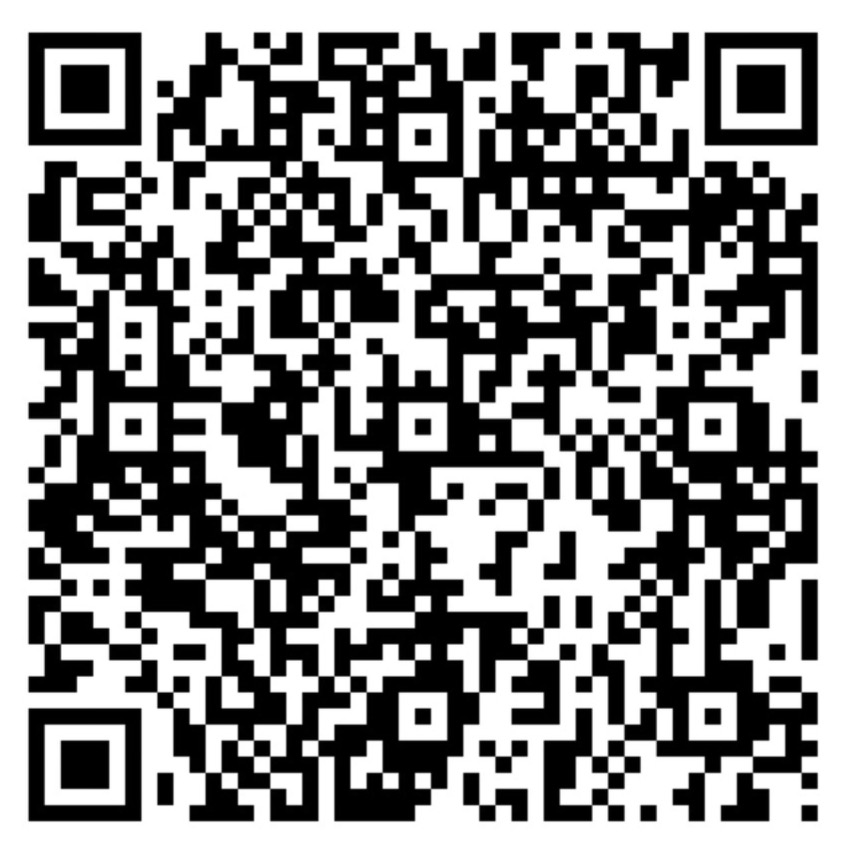

Formal Semantics of Programming Languages
Spring 2021, BIMSA
Course Information
| Abstract: | In this course we will study methods to define behaviors of programs, and methods to reason about properties of programs. We will also practice building verified programs using Coq. |
| Time: | Tuesday and Thursday, 8:00am - 9:35am, starting from Feb 23 |
| Classroom: | 1120 |
| TencentMeeting: | 678 2220 5860 |
| Instructor: | Hanru Jiang |
| Wechat Group: | QR code (expiring on Mar 1) on the right side |
Lecture Notes
- [02/23]:
Introduction (notes)
and Coq tutorial (Overview and Coq files used for the demo).
Here is how to intall Coq, Emacs and Proof General on Windows. Linux and Mac users may prefer installing Coq via opam, then install Emacs and Proof General following their instructions. - [02/25]: Coq tutorial, continued.
Textbooks and References
- Textbooks: lecture notes and handouts
- References:
- Benjamin C. Pierce, et al. Software Foundations.
- John C. Reynolds. Theories of Programming Languages, Cambridge University Press.
- Hanne Riis Nielson, Flemming Nielson. Semantics with Applications: A Formal Introduction.
- Robert Harper. Practical Foundations for Programming Languages. (The online abridged preview edition)
Last modified: Feb 22, 2021